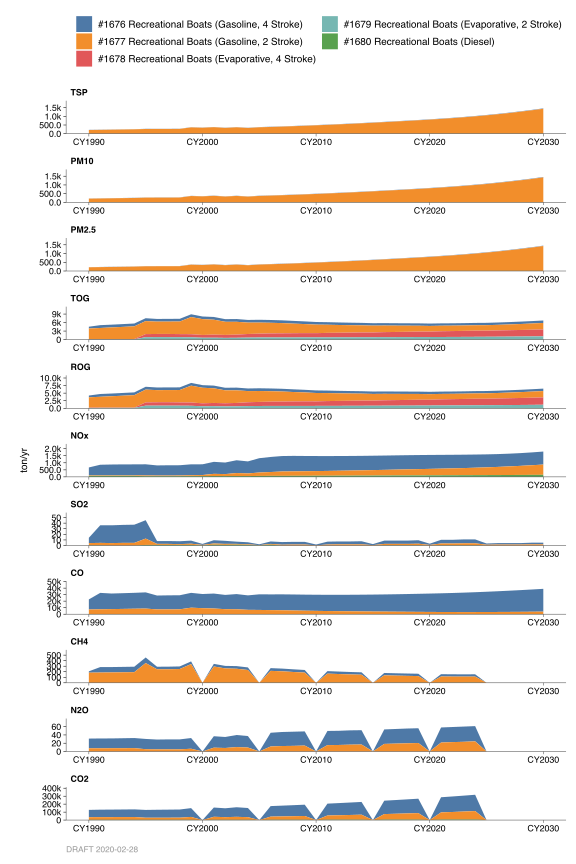
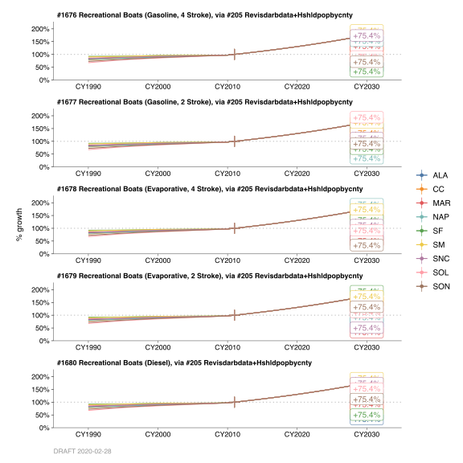

2.9 Recreational Boats
2.9.1 Emissions
Introduction
These categories account for fuel combustion emissions from pleasure boats with inboard or outboard engines, and personal watercraft, etc. in the Bay Area. Nearly all outboard and personal watercraft motors utilized two-stroke engines. These engines burn gasoline inefficiently and discharge as much as 30% unburned fuel into water and subsequently into the air. Spark-ignition outboard engines are available in power ratings from 2 to 300 horsepower. They are used in a wide variety of applications including fishing, water skiing and water-borne transportation. The total population of gasoline powered outboard engines in California was 373,200 in 1990. 2.1 shows the estimated population of outboard and personal watercraft in 1997, 2010 and 2020. As shown in 2.1, the population of personal watercraft is projected to double by 2020 because of continued growth and popularity of this category of marine engine. This will have a significant impact on the emissions inventory attributed to recreational boats categories.
| Category | CY1997 | CY2010 | CY2020 |
|---|---|---|---|
| Outboard Engines | 346,000 | 349,000 | 333,000 |
| Personal Watercraft | 162,000 | 293,000 | 354,000 |
| Total | 508,000 | 642,000 | 687,000 |
Spark-ignition outboard engines include carbureted, fuel injected and direct-injected two- stroke, and carbureted and fuel injected four-stroke configurations. Personal watercraft are defined by U.S. EPA as marine vessels that are not outboards, inboards, or sterndrive, but they can more accurately be defined as small craft on which the rider sits or stands during operation. Personal watercraft are primarily used for recreation, including touring, and water skiing.
Methodologies
California Air Resources Board (CARB) developed the Off-road vehicle emission inventory (OFFROAD2007) model to estimate emissions from off-road motor vehicles for all counties and air basins in California. The criteria and GHG emission data for recreational boat categories in the Bay Area were obtained from the CARB’s OFFROAD2007 model.
Monthly Variation
The monthly activity occurs primarily during late spring, summer and fall. Most of the daily activity occurs during daylight hours.
County Distribution
County emissions were provided by the CARB’s OFFROAD2007 model.
2.9.2 Trends
History

Prior to the 1999 Base year emissions, the methodology was based upon a study by System Applications International (SAI) entitled “Development of an Improved Inventory of Emissions from Pleasure Craft in California”. The study was carried out for the California Air Resources Board and was completed in June 1995. California Department of Motor Vehicles (DMV) Vessel Registration shows that over 98% of the boats registered are pleasure craft. The registration figures were sub-divided into 6 unique length groups and various methods of propulsion, such as inboard, outboard, jet powered and others. For each group, fuel usage was determined from a survey of 10,000 registered boat owners. The survey showed that inboard, inboard/outboard and jet powered craft were the biggest consumers of fuel. Outboard craft were found to be medium gasoline users. Others include sailboats and auxiliary sailboats and were found to have very low average annual consumption. Emission factors were obtained from National Marine Manufacturers Association. These emission factors were also used by Environmental Protection Agency (EPA) in their Non-road Engine and Vehicle Emissions Study. These were given for outboard 2 stroke gasoline engines and inboard 4 stroke gasoline and diesel engines from several engine manufacturers including Honda, Mercury Marine, Outboard Marine Corporation, Volvo and Yamaha. The SAI Report contained average monthly, weekly and diurnal profiles for northern, southern and central California. The figures for northern California were used to develop the annual average inventory.
Growth

Projected emissions for recreational boats were estimated based on ARB’s Off-road vehicle emission inventory model. The growth factors utilized in the OFFROAD model are prepared in a report for the Air Resources Board entitled “A Study to Develop Projected Activity for “Non-Road Mobile” Categories in California, 1970-2020”. In this report, certain economic indicators are used to project the growth in population and usage of small off-road engines in various applications.
Control
In 1998, the U.S. EPA began regulating exhaust emissions from marine engines (outboard motors and personal watercrafts) to reduce 75% emissions by 2025. In December of 1998, the CARB adopted standards to require cleaner engines. Beginning with 2001 models, new outboard engines, personal watercraft and jet boats must be 75% cleaner and 90% cleaner by 2008.
By: Michael Nguyen Date: February, 2014 Base Year 2011